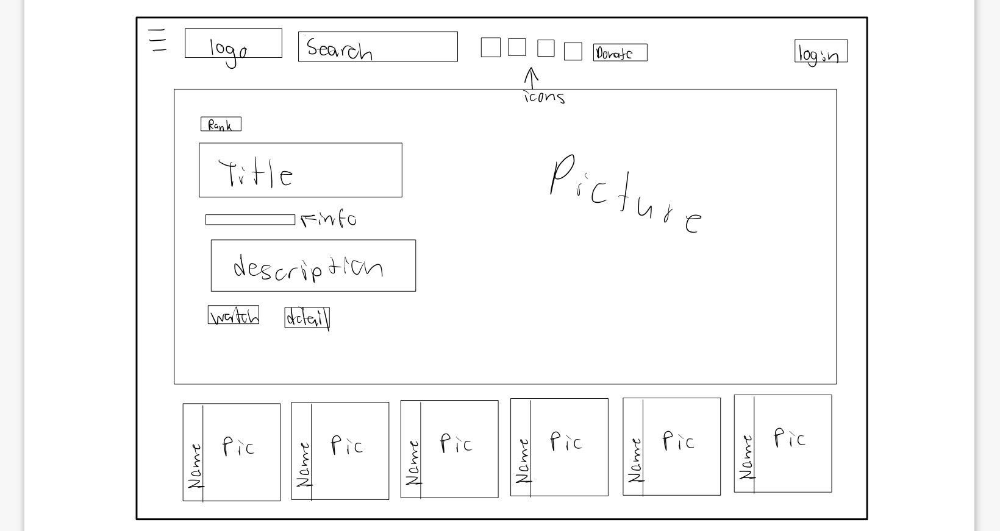
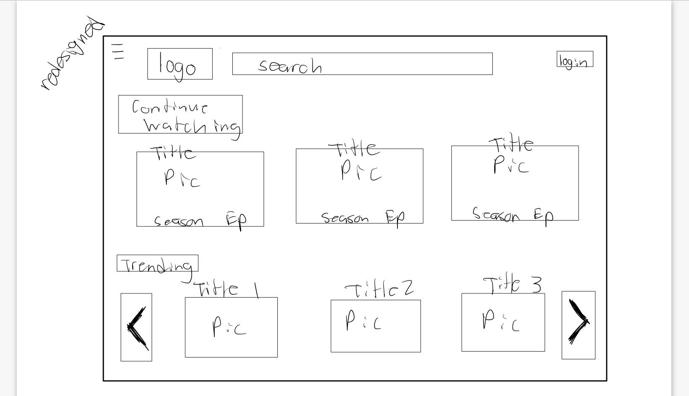

-
Using the favorite website you chose in homework 1, create a wireframe for one page of it using pen/paper, PowerPoint, or any your tool of choice. (use the 'img' tag!) Make sure to let us know what the name of your website is (Use the 'p' tag!)
zoro.to/home
-
Try to improve the website you've chosen, and create a redesigned wireframe of one page for the same website using the principles of visual hierarchy that you learned from the article.

-
What is the goal of the website? Who is it intended for? How does the design accomplish this? Write 2-3 sentences answering these questions. (Use the 'p' tag again!)
The goal of the website is to display a selection of animes to watch from. It's intended for people trying to watch anime. The design accomplishes showing a bunch of trending anime to the viewer.
-
Write 2-3 sentences about what problems your redesign addressed, and how it solved them.
My redesign addressed multiple things. It made more space for the search bar and removed icons I believed were unnecessary and making the top look crunched up. I then thought it was unnecessary how they had one huge show covering the whole screen and then a bunch of tiny images of other trending shows right below it. They used the whole website for one function so I redesigned it to have a continue watching section and the trending show section. For the bottom part (trending shows part) I only put three images instead of the eight to open up more negative space, while preventing it from looking clustered. To still please the audience by showing them a bunch of shows instead of just three, I put two side bars to choose to move the selection left or right to view more. If I could, I would implement an animation that would automatically scroll between the shows, to simultaneuously show multiple.
NOTE: Make sure to include the wireframe images in the website and don't just put it in your assets folder!
Your wireframes should look something like this: